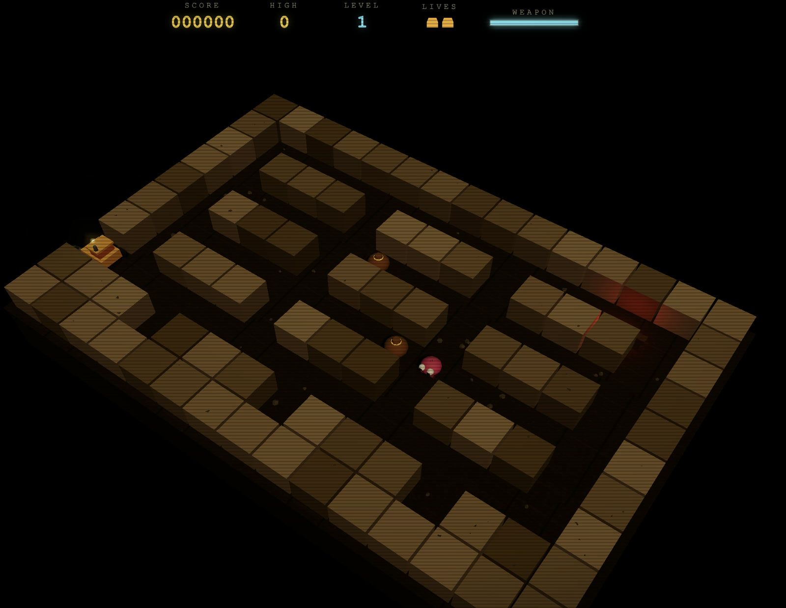

02 October 2026
Qwen 3.8 Flash Next
Sushi 1.1.0 · Pi coding agent
Local run
A deterministic grid simulation with an isometric presentation. The TypeScript check and production build passed, along with 28 of 28 self-tests and validation across all five levels.